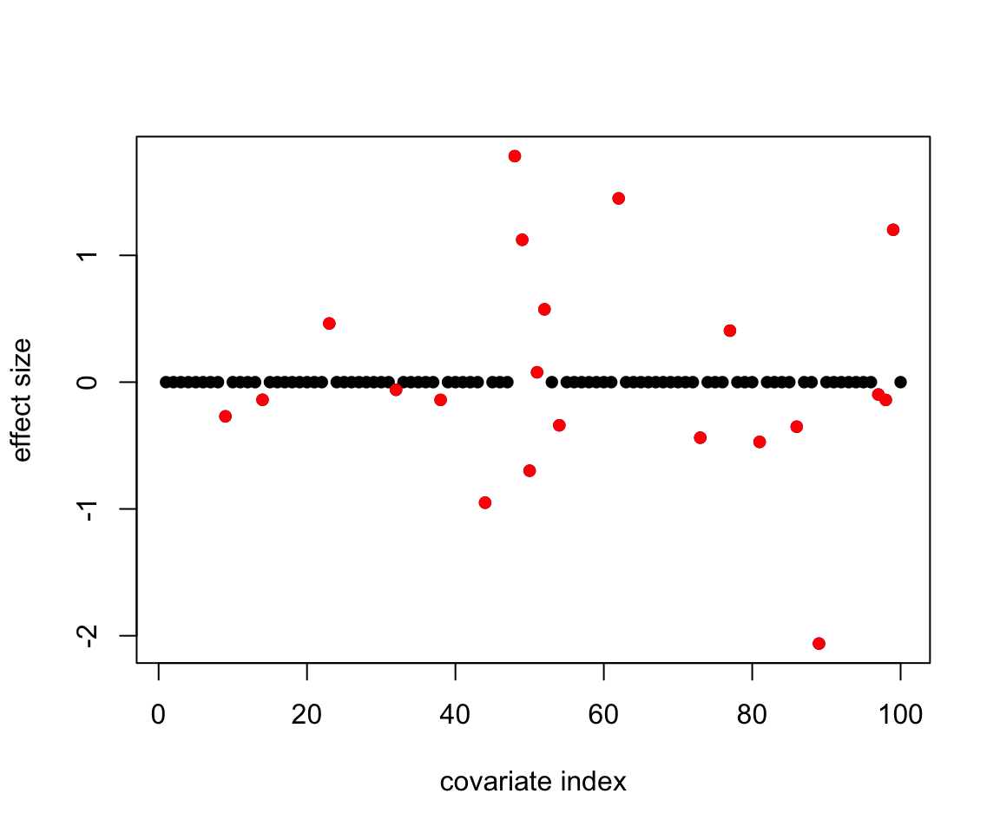
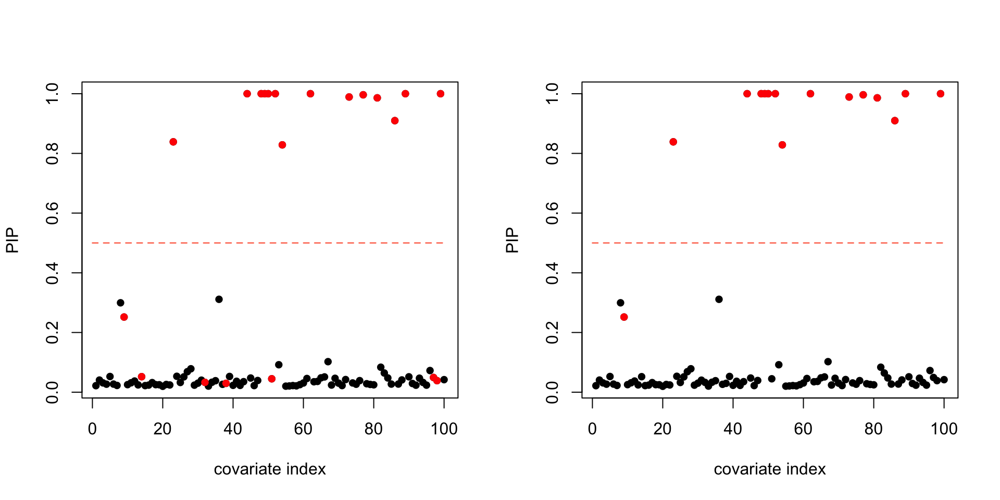

Load functions for data simulation and BVS regression:
source("code/data_gen.R")
source("code/BVS.R")
source("code/BVS_util.R")Here, we randomly generate simluation data by following these steps:
data = data.gen(N=100,P=100,X.sd=1,sparse=0.2,alpha_true=c(0.5,-2),sigma2_e_true=1,sigma2_b_true=1)
X = data$X
y = data$y
A = data$A
beta_true = data$beta_trueHere are all the true signals in the simulated data-set:
plot(beta_true, pch=16, xlab='covariate index', ylab='effect size')
points((1:length(beta_true))[beta_true!=0],beta_true[beta_true!=0],col='red',pch=16)
res = BVS(y=y,X=X,A=A,niter=1000,burn=200)Examine the posterior inclusion probabilities of all covariates, and compare them with the true signals:
par(mfrow=c(1,2))
BVS_plot.PIP(pip=res$PIP, beta_true=beta_true)
BVS_plot.PIP(pip=res$PIP, beta_true=beta_true, thres_b=0.2)
‘True signals’ (the red dots) are defined as covariates with non-zero effect sizes in the left plot, and covariates with absolute effect sizes > 0.2 in the right plot.
Calculate the average posterior inclusion probability over the true ‘non-signals’ vs the true signals:
res.stats = BVS_selection.stats(pip=res$PIP,beta_true=beta_true)
res.stats$pp pp0 pp1
0.0434326 0.6689489 Calculate the precision and recall rates by comparing the true signals with the estimated ones:
res.stats$overlap true signals estimated signals overlap
21 14 14 cat(paste('Precision of BVS estimation:',round(res.stats$overlap[3]/res.stats$overlap[2],digits = 2),'\n'))Precision of BVS estimation: 1 cat(paste('Recall of BVS estimation:',round(res.stats$overlap[3]/res.stats$overlap[1],digits = 2)))Recall of BVS estimation: 0.67sessionInfo()R version 3.5.2 (2018-12-20)
Platform: x86_64-apple-darwin15.6.0 (64-bit)
Running under: macOS Mojave 10.14
Matrix products: default
BLAS: /Library/Frameworks/R.framework/Versions/3.5/Resources/lib/libRblas.0.dylib
LAPACK: /Library/Frameworks/R.framework/Versions/3.5/Resources/lib/libRlapack.dylib
locale:
[1] en_US.UTF-8/en_US.UTF-8/en_US.UTF-8/C/en_US.UTF-8/en_US.UTF-8
attached base packages:
[1] grid stats graphics grDevices utils datasets methods
[8] base
other attached packages:
[1] VennDiagram_1.6.20 futile.logger_1.4.3 mvtnorm_1.0-8
[4] pscl_1.5.2
loaded via a namespace (and not attached):
[1] Rcpp_1.0.0 digest_0.6.18 MASS_7.3-51.1
[4] futile.options_1.0.1 formatR_1.5 magrittr_1.5
[7] evaluate_0.12 stringi_1.2.4 rmarkdown_1.11
[10] lambda.r_1.2.3 tools_3.5.2 stringr_1.3.1
[13] xfun_0.4 yaml_2.2.0 compiler_3.5.2
[16] htmltools_0.3.6 knitr_1.21